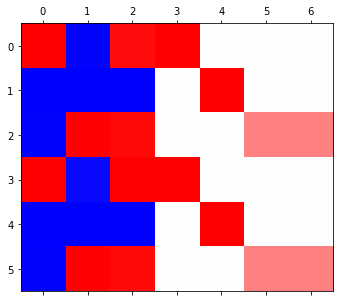
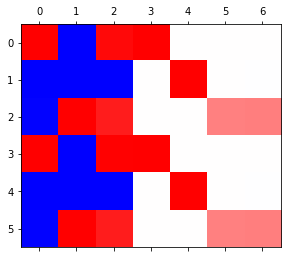
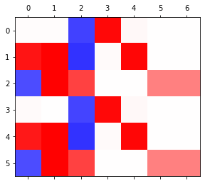
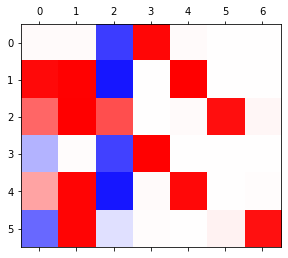

import torch
import numpy as np
import matplotlib.pyplot as plt기계학습 특강 (11주차) 11월16일 [순환신경망– abc예제, abdc예제, abcde예제, AbAcAd예제]
import
Define some funtions
def f(txt,mapping):
return [mapping[key] for key in txt]
sig = torch.nn.Sigmoid()
soft = torch.nn.Softmax(dim=1)
tanh = torch.nn.Tanh()Exam4: AbAcAd (2)
data
- 기존의 정리방식
txt = list('AbAcAd')*100
txt[:10]['A', 'b', 'A', 'c', 'A', 'd', 'A', 'b', 'A', 'c']txt_x = txt[:-1]
txt_y = txt[1:]txt_x[:5],txt_y[:5](['A', 'b', 'A', 'c', 'A'], ['b', 'A', 'c', 'A', 'd'])x = torch.nn.functional.one_hot(torch.tensor(f(txt_x,{'A':0,'b':1,'c':2,'d':3}))).float()
y = torch.nn.functional.one_hot(torch.tensor(f(txt_y,{'A':0,'b':1,'c':2,'d':3}))).float()x,y(tensor([[1., 0., 0., 0.],
[0., 1., 0., 0.],
[1., 0., 0., 0.],
...,
[1., 0., 0., 0.],
[0., 0., 1., 0.],
[1., 0., 0., 0.]]),
tensor([[0., 1., 0., 0.],
[1., 0., 0., 0.],
[0., 0., 1., 0.],
...,
[0., 0., 1., 0.],
[1., 0., 0., 0.],
[0., 0., 0., 1.]]))순환신경망 구현1 (손으로 직접구현) – 리뷰
(1) 숙성담당 네트워크
class rNNCell(torch.nn.Module):
def __init__(self):
super().__init__()
self.i2h = torch.nn.Linear(4,2)
self.h2h = torch.nn.Linear(2,2)
self.tanh = torch.nn.Tanh()
def forward(self,x,hidden):
hidden = self.tanh(self.i2h(x)+self.h2h(hidden))
return hiddentorch.manual_seed(43052)
rnncell = rNNCell() # 숙성담당 네트워크 (2) 조리담당 네트워크
torch.manual_seed(43052)
cook = torch.nn.Linear(2,4) (3) 손실함수, 옵티마이저 설계
loss_fn = torch.nn.CrossEntropyLoss()
optimizr = torch.optim.Adam(list(rnncell.parameters())+list(cook.parameters()))(4) 학습 (6분정도 걸림)
x[[2]].shapetorch.Size([1, 4])T = len(x)
for epoc in range(5000):
## 1~2
loss = 0
ht = torch.zeros(1,2)
for t in range(T):
xt,yt = x[[t]], y[[t]]
ht = rnncell(xt,ht)
ot = cook(ht)
loss = loss + loss_fn(ot,yt)
## 3
loss.backward()
## 4
optimizr.step()
optimizr.zero_grad()(5) 시각화
T = len(x)
hidden = torch.zeros(T,2) # 599년치 h를 담을 변수
_water = torch.zeros(1,2) # 맹물
hidden[[0]] = rnncell(x[[0]],_water)
for t in range(1,T):
hidden[[t]] = rnncell(x[[t]],hidden[[t-1]]) yhat = soft(cook(hidden))
yhattensor([[1.6522e-02, 6.2036e-01, 1.0433e-01, 2.5879e-01],
[9.9965e-01, 6.5788e-05, 1.8450e-05, 2.6785e-04],
[7.6673e-05, 1.9704e-01, 8.0201e-01, 8.7218e-04],
...,
[7.4634e-05, 1.9501e-01, 8.0407e-01, 8.4751e-04],
[9.4785e-01, 7.4711e-03, 6.1182e-04, 4.4064e-02],
[3.6306e-02, 1.2466e-01, 2.8862e-03, 8.3615e-01]],
grad_fn=<SoftmaxBackward0>)plt.matshow(yhat.data[-15:],cmap='bwr')


GPU 실험
실험결과 요약
| len | # of hidden nodes | backward | cpu | gpu | ratio |
|---|---|---|---|---|---|
| 20000 | 20 | O | 93.02 | 3.26 | 28.53 |
| 20000 | 20 | X | 18.85 | 1.29 | 14.61 |
| 2000 | 20 | O | 6.53 | 0.75 | 8.70 |
| 2000 | 20 | X | 1.25 | 0.14 | 8.93 |
| 2000 | 1000 | O | 58.99 | 4.75 | 12.41 |
| 2000 | 1000 | X | 13.16 | 2.29 | 5.74 |
Exam5: abcabC
data
txt = list('abcabC')*100
txt[:8]['a', 'b', 'c', 'a', 'b', 'C', 'a', 'b']txt_x = txt[:-1]
txt_y = txt[1:]mapping = {'a':0,'b':1,'c':2,'C':3}
x= torch.nn.functional.one_hot(torch.tensor(f(txt_x,mapping))).float()
y= torch.nn.functional.one_hot(torch.tensor(f(txt_y,mapping))).float()x = x.to("cuda:0")
y = y.to("cuda:0") x.shapetorch.Size([599, 4])RNN
- bc
- bC
- b의 수준이 2개
- abc
- amC
- 문맥 고려해서 \(\to\) hiddenlayer = 3
torch.manual_seed(43052)
rnn = torch.nn.RNN(4,3)
linr = torch.nn.Linear(3,4)
loss_fn = torch.nn.CrossEntropyLoss()
optimizr = torch.optim.Adam(list(rnn.parameters())+ list(linr.parameters()))rnn.to("cuda:0")
linr.to("cuda:0")Linear(in_features=3, out_features=4, bias=True)- 3000 epochs
for epoc in range(3000):
## 1
_water = torch.zeros(1,3).to("cuda:0")
hidden, hT = rnn(x,_water)
output = linr(hidden)
## 2
loss = loss_fn(output,y)
## 3
loss.backward()
## 4
optimizr.step()
optimizr.zero_grad()yhat = soft(output)
combinded = torch.concat([hidden,yhat],axis=1).data.to("cpu")- 어차피 시각화하려면 cpu에 있어야해
- 나중 기억!
plt.matshow(combinded[-6:],cmap='bwr')
- 6000 epochs
- 3: a일 확률
- 4: b일 확률
- 5: c일 확률
- 6: C일 확률
for epoc in range(3000):
## 1
_water = torch.zeros(1,3).to("cuda:0")
hidden, hT = rnn(x,_water)
output = linr(hidden)
## 2
loss = loss_fn(output,y)
## 3
loss.backward()
## 4
optimizr.step()
optimizr.zero_grad()yhat = soft(output)
combinded = torch.concat([hidden,yhat],axis=1).data.to("cpu")plt.matshow(combinded[-6:],cmap='bwr')
- 9000 epochs
for epoc in range(3000):
## 1
_water = torch.zeros(1,3).to("cuda:0")
hidden, hT = rnn(x,_water)
output = linr(hidden)
## 2
loss = loss_fn(output,y)
## 3
loss.backward()
## 4
optimizr.step()
optimizr.zero_grad()yhat = soft(output)
combinded = torch.concat([hidden,yhat],axis=1).data.to("cpu")plt.matshow(combinded[-6:],cmap='bwr')- 12000 epochs
for epoc in range(3000):
## 1
_water = torch.zeros(1,3).to("cuda:0")
hidden, hT = rnn(x,_water)
output = linr(hidden)
## 2
loss = loss_fn(output,y)
## 3
loss.backward()
## 4
optimizr.step()
optimizr.zero_grad()yhat = soft(output)
combinded = torch.concat([hidden,yhat],axis=1).data.to("cpu")plt.matshow(combinded[-6:],cmap='bwr')
- 15000 epochs
for epoc in range(3000):
## 1
_water = torch.zeros(1,3).to("cuda:0")
hidden, hT = rnn(x,_water)
output = linr(hidden)
## 2
loss = loss_fn(output,y)
## 3
loss.backward()
## 4
optimizr.step()
optimizr.zero_grad()yhat = soft(output)
combinded = torch.concat([hidden,yhat],axis=1).data.to("cpu")plt.matshow(combinded[-12:],cmap='bwr')
- 15,000번 정도 하니 c와 C를 구분하는 모습
- hidden layer(0,1,2)의 색 순서에 따라 문맥상 다른 것을 알 수 있고 학습도 되는 모습을 볼 수 있다.
LSTM
- LSTM
torch.manual_seed(43052)
lstm = torch.nn.LSTM(4,3)
linr = torch.nn.Linear(3,4)
loss_fn = torch.nn.CrossEntropyLoss()
optimizr = torch.optim.Adam(list(lstm.parameters())+ list(linr.parameters()))lstm.to("cuda:0")
linr.to("cuda:0")Linear(in_features=3, out_features=4, bias=True)- 3000 epochs
for epoc in range(3000):
## 1
_water = torch.zeros(1,3).to("cuda:0")
hidden, (hT,cT) = lstm(x,(_water,_water))
output = linr(hidden)
## 2
loss = loss_fn(output,y)
## 3
loss.backward()
## 4
optimizr.step()
optimizr.zero_grad()yhat = soft(output)
combinded = torch.concat([hidden,yhat],axis=1).data.to("cpu")plt.matshow(combinded[-6:],cmap='bwr',vmin=-1,vmax=1)
- 하얀부분이 0 파란 부분이 -1 빨간 부분이 +1
- 6000 epochs
for epoc in range(3000):
## 1
_water = torch.zeros(1,3).to("cuda:0")
hidden, (hT,cT) = lstm(x,(_water,_water))
output = linr(hidden)
## 2
loss = loss_fn(output,y)
## 3
loss.backward()
## 4
optimizr.step()
optimizr.zero_grad()yhat = soft(output)
combinded = torch.concat([hidden,yhat],axis=1).data.to("cpu")plt.matshow(combinded[-6:],cmap='bwr',vmin=-1,vmax=1)
- rnn에 비해 lstm은 조금 돌려도 어느정도 비교 잘 해낸다
RNN vs LSTM 성능비교실험
- RNN
fig, ax = plt.subplots(5,5,figsize=(10,10))
for i in range(5):
for j in range(5):
rnn = torch.nn.RNN(4,3).to("cuda:0")
linr = torch.nn.Linear(3,4).to("cuda:0")
loss_fn = torch.nn.CrossEntropyLoss()
optimizr = torch.optim.Adam(list(rnn.parameters())+list(linr.parameters()),lr=0.1)
_water = torch.zeros(1,3).to("cuda:0")
for epoc in range(3000):
## 1
hidden, hT = rnn(x,_water)
output = linr(hidden)
## 2
loss = loss_fn(output,y)
## 3
loss.backward()
## 4
optimizr.step()
optimizr.zero_grad()
yhat=soft(output)
combind = torch.concat([hidden,yhat],axis=1)
ax[i][j].matshow(combind.to("cpu").data[-6:],cmap='bwr',vmin=-1,vmax=1)
fig.suptitle(r"$RNN$",size=20)
fig.tight_layout()
- LSTM
fig, ax = plt.subplots(5,5,figsize=(10,10))
for i in range(5):
for j in range(5):
lstm = torch.nn.LSTM(4,3).to("cuda:0")
linr = torch.nn.Linear(3,4).to("cuda:0")
loss_fn = torch.nn.CrossEntropyLoss()
optimizr = torch.optim.Adam(list(lstm.parameters())+list(linr.parameters()),lr=0.1)
_water = torch.zeros(1,3).to("cuda:0")
for epoc in range(3000):
## 1
hidden, (hT,cT) = lstm(x,(_water,_water))
output = linr(hidden)
## 2
loss = loss_fn(output,y)
## 3
loss.backward()
## 4
optimizr.step()
optimizr.zero_grad()
yhat=soft(output)
combind = torch.concat([hidden,yhat],axis=1)
ax[i][j].matshow(combind.to("cpu").data[-6:],cmap='bwr',vmin=-1,vmax=1)
fig.suptitle(r"$LSTM$",size=20)
fig.tight_layout()
- lstm이 rnn보다 이런 상황에서는 더 잘 학습해낸다.
- linear 의 hiddenlayer로 구분되어 있다.
Exam6: abcdabcD
data
txt = list('abcdabcD')*100
txt[:8]['a', 'b', 'c', 'd', 'a', 'b', 'c', 'D']txt_x = txt[:-1]
txt_y = txt[1:]mapping = {'a':0, 'b':1, 'c':2, 'd':3, 'D':4}
x = torch.nn.functional.one_hot(torch.tensor(f(txt_x,mapping))).float()
y = torch.nn.functional.one_hot(torch.tensor(f(txt_y,mapping))).float()x=x.to("cuda:0")
y=y.to("cuda:0")RNN vs LSTM 성능비교실험
- RNN
fig, ax = plt.subplots(5,5,figsize=(10,10))
for i in range(5):
for j in range(5):
rnn = torch.nn.RNN(5,4).to("cuda:0")
linr = torch.nn.Linear(4,5).to("cuda:0")
loss_fn = torch.nn.CrossEntropyLoss()
optimizr = torch.optim.Adam(list(rnn.parameters())+list(linr.parameters()),lr=0.1)
_water = torch.zeros(1,4).to("cuda:0")
for epoc in range(3000):
## 1
hidden, hT = rnn(x,_water)
output = linr(hidden)
## 2
loss = loss_fn(output,y)
## 3
loss.backward()
## 4
optimizr.step()
optimizr.zero_grad()
yhat=soft(output)
combind = torch.concat([hidden,yhat],axis=1)
ax[i][j].matshow(combind.to("cpu").data[-8:],cmap='bwr',vmin=-1,vmax=1)
fig.suptitle(r"$RNN$",size=20)
fig.tight_layout()
- LSTM
fig, ax = plt.subplots(5,5,figsize=(10,10))
for i in range(5):
for j in range(5):
lstm = torch.nn.LSTM(5,4).to("cuda:0")
linr = torch.nn.Linear(4,5).to("cuda:0")
loss_fn = torch.nn.CrossEntropyLoss()
optimizr = torch.optim.Adam(list(lstm.parameters())+list(linr.parameters()),lr=0.1)
_water = torch.zeros(1,4).to("cuda:0")
for epoc in range(3000):
## 1
hidden, (hT,cT) = lstm(x,(_water,_water))
output = linr(hidden)
## 2
loss = loss_fn(output,y)
## 3
loss.backward()
## 4
optimizr.step()
optimizr.zero_grad()
yhat=soft(output)
combind = torch.concat([hidden,yhat],axis=1)
ax[i][j].matshow(combind.to("cpu").data[-8:],cmap='bwr',vmin=-1,vmax=1)
fig.suptitle(r"$LSTM$",size=20)
fig.tight_layout()
- 관찰1: LSTM이 확실히 장기기억에 강하다.
- 관찰2: LSTM은 hidden에 0이 잘 나온다.
- 사실 확실히 구분되는 특징을 판별할때는 -1,1 로 히든레이어 값들이 설정되면 명확하다.
- 히든레이어에 -1~1사이의 값이 나온다면 애매한 판단이 내려지게 된다.
- 그런데 이 애매한 판단이 어떻게 보면 문맥의 뉘앙스를 이해하는데 더 잘 맞다.
- 그런데 RNN은 -1,1로 셋팅된 상황에서 -1~1로의 변화가 더디다는 것이 문제임.
LSTM의 계산과정
data: abaB
txt = list('abaB')*100
txt[:5]['a', 'b', 'a', 'B', 'a']- ab
- aB
- 로서 a의 수준이 2개로 나뉨 \(\to\) hidden node = 2
txt_x = txt[:-1]
txt_y = txt[1:]mapping = {'a':0, 'b':1, 'B':2}
x = torch.nn.functional.one_hot(torch.tensor(f(txt_x,mapping))).float()
y = torch.nn.functional.one_hot(torch.tensor(f(txt_y,mapping))).float()1 epoch ver1 (with torch.nn.LSTMCell)
torch.manual_seed(43052)
lstm_cell = torch.nn.LSTMCell(3,2)
linr = torch.nn.Linear(2,3)
loss_fn = torch.nn.CrossEntropyLoss()
optimizr = torch.optim.Adam(list(lstm_cell.parameters())+list(linr.parameters()),lr=0.1)T = len(x)
for epoc in range(1):
ht = torch.zeros(1,2)
ct = torch.zeros(1,2)
loss = 0
## 1~2
for t in range(T):
xt,yt = x[[t]], y[[t]]
ht,ct = lstm_cell(xt,(ht,ct))
ot = linr(ht)
loss = loss + loss_fn(ot,yt)
loss = loss / T
## 3
loss.backward()
## 4
optimizr.step()
optimizr.zero_grad()- 데이터 적으니까 cpu로 할 것임
ht,ct (tensor([[-0.0406, 0.2505]], grad_fn=<MulBackward0>),
tensor([[-0.0975, 0.7134]], grad_fn=<AddBackward0>))- hidden node가 많고 len 이 클수록 GPU가 효율이 좋다
1 epoch ver2 (완전 손으로 구현)
t=0 \(\to\) t=1
- lstm_cell 을 이용한 계산 (결과비교용)
torch.manual_seed(43052)
lstm_cell = torch.nn.LSTMCell(3,2)
linr = torch.nn.Linear(2,3)
loss_fn = torch.nn.CrossEntropyLoss()
optimizr = torch.optim.Adam(list(lstm_cell.parameters())+list(linr.parameters()),lr=0.1)T = len(x)
for epoc in range(1):
ht = torch.zeros(1,2)
ct = torch.zeros(1,2)
loss = 0
## 1~2
for t in range(1):
xt,yt = x[[t]], y[[t]]
ht,ct = lstm_cell(xt,(ht,ct))
# ot = linr(ht)
# loss = loss + loss_fn(ot,yt)
# loss = loss / T
# ## 3
# loss.backward()
# ## 4
# optimizr.step()
# optimizr.zero_grad()ht,ct (tensor([[-0.0541, 0.0892]], grad_fn=<MulBackward0>),
tensor([[-0.1347, 0.2339]], grad_fn=<AddBackward0>))- 이런결과를 어떻게 만드는걸까?
- https://pytorch.org/docs/stable/generated/torch.nn.LSTM.html
\(i_t = \sigma(W_{ii} x_t + b_{ii} + W_{hi} h_{t-1} + b_{hi})\)
\(f_t = \sigma(W_{if} x_t + b_{if} + W_{hf} h_{t-1} + b_{hf})\)
\(g_t = \tanh (W_{ig} x_t + b_{ig} + W_{hg} h_{t-1} + b_{hg})\)
\(o_t = \sigma(W_{io} x_t + b_{io} + W_{ho} h_{t-1} + b_{hg})\)
\(o_t = \sigma(W_{io} x_t + b_{io} + W_{ho} h_{t-1} + b_{ho})\)
\(c_t = f_t \odot c_{t-1} + i_t \odot g_t\)
\(h_t = o_t \odot \tanh (c_t)\)
\(\sigma = \text{ Sigmoid }\)
\(x_t, h_{t-1} \underrightarrow{lin} \text{ }\circ \text{ }\underrightarrow{sig} \text{ }i_t\)
\(x_t, h_{t-1} \underrightarrow{lin} \text{ }\square \text{ } \underrightarrow{sig} \text{ }f_t\)
\(x_t, h_{t-1} \underrightarrow{lin} \text{ }\star \text{ } \underrightarrow{tanh} \text{ }g_t\)
\(x_t, h_{t-1} \underrightarrow{lin} \text{ } \triangleleft \text{ }\underrightarrow{sig} \text{ }o_t\)
\(x_t, h_{t-1} \underrightarrow{lin} \text{ }\circ \text{ , } \square \text{, } \star \text{, } \triangleleft \text{ } \to \sigma(circ) \text{, }\sigma(\square) \text{ , }\tanh(\star)\text{ , } \sigma(\triangleleft) \sim i_t, f_t, g_t, o_t\)
- 위에 나온 W가 어떻게 계산되나
weight_ih_l[k] – the learnable input-hidden weights of the \(\text{k}^{th}\) layer \((W_ii|W_if|W_ig|W_io)\), of shape (4hidden_size, input_size) for \(k = 0\). Otherwise, the shape is (4hidden_size, num_directions * hidden_size). If proj_size > 0 was specified, the shape will be (4hidden_size, num_directions proj_size) for \(k > 0\)
weight_hh_l[k] – the learnable hidden-hidden weights of the \(\text{k}^{th}\)layer \((W_hi|W_hf|W_hg|W_ho)\), of shape (4hidden_size, hidden_size). If proj_size > 0 was specified, the shape will be (4hidden_size, proj_size).
- 직접계산
- \(o_t\) = output_gate
- \(f_t\) = forget_gate
- \(i_t\) = input_gate
ht = torch.zeros(1,2)
ct = torch.zeros(1,2)_ifgo = xt @ lstm_cell.weight_ih.T + ht @ lstm_cell.weight_hh.T + lstm_cell.bias_ih + lstm_cell.bias_hh
_ifgotensor([[ 0.0137, 0.1495, 0.0879, 0.6436, -0.2615, 0.3974, -0.3506, -0.4550]],
grad_fn=<AddBackward0>)\(\circ \text{ , } \square \text{, } \star \text{, } \triangleleft\)각 두 개씩
input_gate = sig(_ifgo[:,0:2])
forget_gate = sig(_ifgo[:,2:4])
gt = tanh(_ifgo[:,4:6])
output_gate = sig(_ifgo[:,6:8])ct = forget_gate * ct + input_gate * gt
ht = output_gate * tanh(ct)ht,ct(tensor([[-0.0812, 0.1327]], grad_fn=<MulBackward0>),
tensor([[-0.1991, 0.3563]], grad_fn=<AddBackward0>))t=0 \(\to\) t=T
torch.manual_seed(43052)
lstm_cell = torch.nn.LSTMCell(3,2)
linr = torch.nn.Linear(2,3)
loss_fn = torch.nn.CrossEntropyLoss()
optimizr = torch.optim.Adam(list(lstm_cell.parameters())+list(linr.parameters()),lr=0.1)T = len(x)
for epoc in range(1):
ht = torch.zeros(1,2)
ct = torch.zeros(1,2)
loss = 0
## 1~2
for t in range(T):
xt,yt = x[[t]], y[[t]]
## lstm_cell step1: calculate _ifgo
_ifgo = xt @ lstm_cell.weight_ih.T + ht @ lstm_cell.weight_hh.T + lstm_cell.bias_ih + lstm_cell.bias_hh
## lstm_cell step2: decompose _ifgo
input_gate = sig(_ifgo[:,0:2])
forget_gate = sig(_ifgo[:,2:4])
gt = tanh(_ifgo[:,4:6])
output_gate = sig(_ifgo[:,6:8])
## lstm_cell step3: calculate ht,ct
ct = forget_gate * ct + input_gate * gt
ht = output_gate * tanh(ct)
# ot = linr(ht)
# loss = loss + loss_fn(ot,yt)
# loss = loss / T
# ## 3
# loss.backward()
# ## 4
# optimizr.step()
# optimizr.zero_grad()ht,ct(tensor([[-0.0406, 0.2505]], grad_fn=<MulBackward0>),
tensor([[-0.0975, 0.7134]], grad_fn=<AddBackward0>))1 epoch ver3 (with torch.nn.LSTM)
torch.manual_seed(43052)
lstm_cell = torch.nn.LSTMCell(3,2)
linr = torch.nn.Linear(2,3) lstm = torch.nn.LSTM(3,2) lstm.weight_hh_l0.data = lstm_cell.weight_hh.data
lstm.bias_hh_l0.data = lstm_cell.bias_hh.data
lstm.weight_ih_l0.data = lstm_cell.weight_ih.data
lstm.bias_ih_l0.data = lstm_cell.bias_ih.data - 초기화된 가중치값들로 덮어씌우기
loss_fn = torch.nn.CrossEntropyLoss()
optimizr = torch.optim.Adam(list(lstm.parameters()) + list(linr.parameters()), lr=0.1) _water = torch.zeros(1,2)
for epoc in range(1):
## step1
hidden, (ht,ct) = lstm(x,(_water,_water))
output = linr(hidden)
# ## step2
# loss = loss_fn(output,y)
# ## step3
# loss.backward()
# ## step4
# optimizr.step()
# optimizr.zero_grad() ht,ct(tensor([[-0.0406, 0.2505]], grad_fn=<SqueezeBackward1>),
tensor([[-0.0975, 0.7134]], grad_fn=<SqueezeBackward1>))LSTM은 왜 강한가?
data: abaB
txt = list('abaB')*100
txt[:5]['a', 'b', 'a', 'B', 'a']n_words = 3mapping = {'a':0, 'b':1, 'B':2}txt_x = txt[:-1]
txt_y = txt[1:]txt_x[:10],txt_y[:10](['a', 'b', 'a', 'B', 'a', 'b', 'a', 'B', 'a', 'b'],
['b', 'a', 'B', 'a', 'b', 'a', 'B', 'a', 'b', 'a'])x = torch.nn.functional.one_hot(torch.tensor(f(txt_x,mapping))).float()
y = torch.nn.functional.one_hot(torch.tensor(f(txt_y,mapping))).float()x,y(tensor([[1., 0., 0.],
[0., 1., 0.],
[1., 0., 0.],
...,
[1., 0., 0.],
[0., 1., 0.],
[1., 0., 0.]]),
tensor([[0., 1., 0.],
[1., 0., 0.],
[0., 0., 1.],
...,
[0., 1., 0.],
[1., 0., 0.],
[0., 0., 1.]]))1000 epoch
torch.manual_seed(43052)
lstm = torch.nn.LSTM(3,2)
linr = torch.nn.Linear(2,3) loss_fn = torch.nn.CrossEntropyLoss()
optimizr = torch.optim.Adam(list(lstm.parameters())+ list(linr.parameters()),lr=0.1)_water = torch.zeros(1,2)
for epoc in range(1000):
## step1
hidden, (ht,ct) = lstm(x,(_water,_water))
output = linr(hidden)
## step2
loss = loss_fn(output,y)
## step3
loss.backward()
## step4
optimizr.step()
optimizr.zero_grad() 시각화
T = len(x)
input_gate = torch.zeros(T,2)
forget_gate = torch.zeros(T,2)
output_gate = torch.zeros(T,2)
g = torch.zeros(T,2)
cell = torch.zeros(T,2)
h = torch.zeros(T,2) - 변수를 담을 빈 셋 설정
for t in range(T):
## 1: calculate _ifgo
_ifgo = x[[t]] @ lstm.weight_ih_l0.T + h[[t]] @ lstm.weight_hh_l0.T + lstm.bias_ih_l0 + lstm.bias_hh_l0
## 2: decompose _ifgo
input_gate[[t]] = sig(_ifgo[:,0:2])
forget_gate[[t]] = sig(_ifgo[:,2:4])
g[[t]] = tanh(_ifgo[:,4:6])
output_gate[[t]] = sig(_ifgo[:,6:8])
## 3: calculate ht,ct
cell[[t]] = forget_gate[[t]] * cell[[t]] + input_gate[[t]] * g[[t]]
h[[t]] = output_gate[[t]] * tanh(cell[[t]])combinded1 = torch.concat([input_gate,forget_gate,output_gate],axis=1)
combinded2 = torch.concat([g,cell,h,soft(output)],axis=1)plt.matshow(combinded1[-8:].data,cmap='bwr',vmin=-1,vmax=1);
plt.xticks(range(combinded1.shape[-1]),labels=['i']*2 + ['f']*2 + ['o']*2);
plt.matshow(combinded2[-8:].data,cmap='bwr',vmin=-1,vmax=1)
plt.xticks(range(combinded2.shape[-1]),labels=['g']*2 + ['c']*2 + ['h']*2 + ['yhat']*3);

- 상단그림은 게이트의 값들만 시각화, 하단그림은 게이트 이외의 값들을 시각화
시각화의 해석I
plt.matshow(combinded1[-8:].data,cmap='bwr',vmin=-1,vmax=1);
plt.xticks(range(combinded1.shape[-1]),labels=['i']*2 + ['f']*2 + ['o']*2);
- input_gate, forget_gate, output_gate는 모두 0~1 사이의 값을 가진다.
- 이 값들은 각각 모두 \({\boldsymbol g}_t, {\boldsymbol c}_{t-1}, \tanh({\boldsymbol c}_t)\)에 곱해진다. 따라서 input_gate, forget_gate, output_gate 는 gate의 역할로 비유가능하다. (1이면 통과, 0이면 차단)
- input_gate: \({\boldsymbol g}_t\)의 값을 얼만큼 통과시킬지 0~1사이의 숫자로 결정
- forget_gate: \({\boldsymbol c}_{t-1}\)의 값을 얼만큼 통과시킬지 0~1사이의 숫자로 결정
- output_gate: \(\tanh({\boldsymbol c}_t)\)의 값을 얼만큼 통과시킬지 0~1사이의 숫자로 결정
(서연 필기)
- 값들이 0과 1사이의 값을 가진다
- 파 -1 흰 0 빨 1
- 0 곱하면 어떤 값이든 0이 되니까 차단한다 표현
시각화의 해석II
plt.matshow(combinded2[-8:].data,cmap='bwr',vmin=-1,vmax=1)
plt.xticks(range(combinded2.shape[-1]),labels=['g']*2 + ['c']*2 + ['h']*2 + ['yhat']*3);
- 결국 \({\boldsymbol g}_t\to {\boldsymbol c}_t \to {\boldsymbol h}_t \to \hat{\boldsymbol y}\) 의 느낌이다. (\({\boldsymbol h}_t\)를 계산하기 위해서는 \({\boldsymbol c}_t\)가 필요했고 \({\boldsymbol c}_t\)를 계산하기 위해서는 \({\boldsymbol c}_{t-1}\)과 \({\boldsymbol g}_t\)가 필요했음)
- \({\boldsymbol h}_t= \tanh({\boldsymbol c}_t) \odot {\boldsymbol o}_t\)
- \({\boldsymbol c}_t ={\boldsymbol c}_{t-1} \odot {\boldsymbol f}_t + {\boldsymbol g}_{t} \odot {\boldsymbol i}_t\)
- \({\boldsymbol g}_t,{\boldsymbol c}_t,{\boldsymbol h}_t\) 모두 \({\boldsymbol x}_t\)의 정보를 숙성시켜 가지고 있는 느낌이 든다.
- \({\boldsymbol g}_t\) 특징: 보통 -1,1 중 하나의 값을 가지도록 학습되어 있다. (마치 RNN의 hidden node처럼!)
- \(\boldsymbol{g}_t = \tanh({\boldsymbol x}_t {\bf W}_{ig} + {\boldsymbol h}_{t-1} {\bf W}_{hg}+ {\boldsymbol b}_{ig}+{\boldsymbol b}_{hg})\)
- \({\boldsymbol c}_t\) 특징: \({\boldsymbol g}_t\)와 매우 비슷하지만 약간 다른값을 가진다. 그래서 \({\boldsymbol g}_t\)와는 달리 -1,1 이외의 값도 종종 등장.
print("first row: gt={}, ct={}".format(g[-8].data, cell[-8].data))
print("second row: gt={}, ct={}".format(g[-7].data, cell[-7].data))
#g[-7], cell[-7]first row: gt=tensor([ 0.9999, -0.9999]), ct=tensor([ 0.9647, -0.9984])
second row: gt=tensor([ 0.9970, -0.9554]), ct=tensor([ 0.3592, -0.9373])- \({\boldsymbol h}_t\) 특징: (1) \({\boldsymbol c}_t\)의 느낌이 있음 하지만 약간의 변형이 있음. (2) -1~1 사이에의 값을 훨씬 다양하게 가진다. (tanh때문)
(서연 필기)
- comparison of g,c part
- 보니까 빨간 색은 1에 가까운 값, 파란색은 -1에 가까운 값들을 띄었다.
- 그리고 연한 빨간색인 부분은 0.3592로 낮았고, g부분과 c부분이 열별로 보았을 때 달랐다
print("first row: gt={}, ct={}, ht={}".format(g[-8].data, cell[-8].data,h[-8].data))
print("second row: gt={}, ct={}, ht={}".format(g[-7].data, cell[-7].data,h[-7].data))
#g[-7], cell[-7]first row: gt=tensor([ 0.9999, -0.9999]), ct=tensor([ 0.9647, -0.9984]), ht=tensor([ 0.7370, -0.3323])
second row: gt=tensor([ 0.9970, -0.9554]), ct=tensor([ 0.3592, -0.9373]), ht=tensor([ 0.0604, -0.6951])(서연 필기)
- comparison of c,h part
- h는 c와 무관해보이지 않는다.
- 단지 어떤 변형이 있는 것 같다.
- 예전의문 해결
- 실험적으로 살펴보니 LSTM이 RNN보다 장기기억에 유리했음.
- 그 이유: RRN은 \({\boldsymbol h}_t\)의 값이 -1 혹은 1로 결정되는 경우가 많았음. 그러나 경우에 따라서는 \({\boldsymbol h}_t\)이 -1~1의 값을 가지는 것이 문맥적 뉘앙스를 포착하기에는 유리한데 LSTM이 이러한 방식으로 학습되는 경우가 많았음.
- 왜 LSTM의 \({\boldsymbol h}_t\)은 -1,1 이외의 값을 쉽게 가질 수 있는가? (1) gate들의 역할 (2) 마지막에 취해지는 tanh 때문
LSTM의 알고리즘 리뷰 I (수식위주)
(step1) calculate \({\tt ifgo}\)
\({\tt ifgo} = {\boldsymbol x}_t \big[{\bf W}_{ii} | {\bf W}_{if}| {\bf W}_{ig} |{\bf W}_{io}\big] + {\boldsymbol h}_{t-1} \big[ {\bf W}_{hi}|{\bf W}_{hf} |{\bf W}_{hg} | {\bf W}_{ho} \big] + bias\)
\(=\big[{\boldsymbol x}_t{\bf W}_{ii} + {\boldsymbol h}_{t-1}{\bf W}_{hi} ~\big|~ {\boldsymbol x}_t{\bf W}_{if}+ {\boldsymbol h}_{t-1}{\bf W}_{hf}~ \big|~ {\boldsymbol x}_t{\bf W}_{ig} + {\boldsymbol h}_{t-1}{\bf W}_{hg} ~\big|~ {\boldsymbol x}_t{\bf W}_{io} + {\boldsymbol h}_{t-1}{\bf W}_{ho} \big] + bias\)
참고: 위의 수식은 아래코드에 해당하는 부분
ifgo = xt @ lstm_cell.weight_ih.T + ht @ lstm_cell.weight_hh.T + lstm_cell.bias_ih + lstm_cell.bias_hh(step2) decompose \({\tt ifgo}\) and get \({\boldsymbol i}_t\), \({\boldsymbol f}_t\), \({\boldsymbol g}_t\), \({\boldsymbol o}_t\)
\({\boldsymbol i}_t = \sigma({\boldsymbol x}_t {\bf W}_{ii} + {\boldsymbol h}_{t-1} {\bf W}_{hi} +bias )\)
\({\boldsymbol f}_t = \sigma({\boldsymbol x}_t {\bf W}_{if} + {\boldsymbol h}_{t-1} {\bf W}_{hf} +bias )\)
\({\boldsymbol g}_t = \tanh({\boldsymbol x}_t {\bf W}_{ig} + {\boldsymbol h}_{t-1} {\bf W}_{hg} +bias )\)
\({\boldsymbol o}_t = \sigma({\boldsymbol x}_t {\bf W}_{io} + {\boldsymbol h}_{t-1} {\bf W}_{ho} +bias )\)
(step3) calculate \({\boldsymbol c}_t\) and \({\boldsymbol h}_t\)
\({\boldsymbol c}_t = {\boldsymbol i}_t \odot {\boldsymbol g}_t+ {\boldsymbol f}_t \odot {\boldsymbol c}_{t-1}\)
\({\boldsymbol h}_t = \tanh({\boldsymbol o}_t \odot {\boldsymbol c}_t)\)
LSTM의 알고리즘 리뷰 II (느낌위주)
\(x_t, h_{t-1} \underrightarrow{lin} \text{ } \triangleleft \text{ }\underrightarrow{sig} \text{ }o_t\)
\(x_t, h_{t-1} \underrightarrow{lin} \text{ }\circ \text{ , } \square \text{, } \star \text{, } \triangleleft \text{ } \to \sigma(circ) \text{, }\sigma(\square) \text{ , }\tanh(\star)\text{ , } \sigma(\triangleleft) \sim i_t, f_t, g_t, o_t\)
- 이해 및 암기를 돕기위해서 비유적으로 설명한 챕터입니다..
- 느낌1: RNN이 콩물에서 간장을 한번에 숙성시키는 방법이라면 LSTM은 콩물에서 간장을 3차로 나누어 숙성하는 느낌이다.
- 콩물: \({\boldsymbol x}_t\)
- 1차숙성: \({\boldsymbol g}_t\)
- 2차숙성: \({\boldsymbol c}_t\)
- 3차숙성: \({\boldsymbol h}_t\)
- 느낌2: \({\boldsymbol g}_t\)에 대하여
- 계산방법: \({\boldsymbol x}_t\)와 \({\boldsymbol h}_{t-1}\)를 \({\bf W}_{ig}, {\bf W}_{hg}\)를 이용해 선형결합하고 \(\tanh\)를 취한 결과
- RNN에서 간장을 만들던 그 수식에서 \(h_t\)를 \(g_t\)로 바꾼것
- 크게 2가지의 의미를 가진다 (1) 과거와 현재의 결합 (2) 활성화함수 \(\tanh\)를 적용
(서연 필기)
\(x_t, h_{t-1} \underrightarrow{lin} \text{ }\circ \text{ }\underrightarrow{sig} \text{ }i_t\)
\(x_t, h_{t-1} \underrightarrow{lin} \text{ }\square \text{ } \underrightarrow{sig} \text{ }f_t\)
\(x_t, h_{t-1} \underrightarrow{lin} \text{ }\star \text{ } \underrightarrow{tanh} \text{ }g_t\)
를 풀어서 쓰면
\(\tanh(x_t W_{ig} + h_{t-1} W_{hg} + bias)\)
RNN: \(h_t = \tanh(x_t W + h_{t-1} W + bias)\)
LSTM: \(g_t = \tanh(x_t W + h_{t-1} W + bias)\) - 과거\(h_{t-1}\)와 현재\(x_t\)의 결합
- 느낌3: \({\boldsymbol c}_t\)에 대하여 (1)
- 계산방법: \({\boldsymbol g}_{t}\)와 \({\boldsymbol c}_{t-1}\)를 요소별로 선택하고 더하는 과정
- \(g_t\)는 (1) 과거와 현재의 결합 (2) 활성화함수 tanh를 적용으로 나누어지는데 이중에서 (1) 과거와 현재의 정보를 결합하는 과정만 해당한다. 차이점은 요소별 선택 후 덧셈
- \(g_t\)는 선형 결합
- 이러한 결합을 쓰는 이유? 게이트를 이용하여 과거와 현재의 정보를 제어 (일반적인 설명, 솔직히 내가 좋아하는 설명은 아님)
(서연 필기)
\(c_t = g_t \odot Input + c_{t-1} \odot Forget\)
- 느낌4: \({\boldsymbol c}_t\)에 대하여 (2) // \({\boldsymbol c}_t\)는 왜 과거와 현재의 정보를 제어한다고 볼 수 있는가?
\(t=1\) 시점 계산과정관찰
input_gate[1],g[1],forget_gate[1],cell[0](tensor([0.9065, 0.9999], grad_fn=<SelectBackward0>),
tensor([0.9931, 0.9999], grad_fn=<SelectBackward0>),
tensor([0.9931, 0.0014], grad_fn=<SelectBackward0>),
tensor([ 0.3592, -0.9373], grad_fn=<SelectBackward0>))\([0.9,1.0] \odot {\boldsymbol g}_t + [1.0,0.0] \odot {\boldsymbol c}_{t-1}\)
(서연 필기)
여기서 곱은 element별 곱 - \([0.9,1.0] \odot g_t = [0.9,1.0]\odot [g_1,g_2] = [0.9g_1(현재)_,1.0g_2(과거)]\) - 여기서 0이 현재에 곱해지면 현재를 기억하지 않고 과거에 0이 곱해지면 과거를 기억하지 않도록 조정할 수 있음
\(\star\) gate없으면 조정 못 하나??\(\to\) no, weigjht로도 조정할 수 있지 않을까?
- forget_gate는 \(c_{t-1}\)의 첫번째 원소는 기억하고, 두번째 원소는 잊으라고 말하고 있음 // forget_gate는 과거(\(c_{t-1}\))의 정보를 얼마나 잊을지 (= 얼마나 기억할지) 를 결정한다고 해석할 수 있다.
- input_gate는 \(g_{t}\)의 첫번째 원소와 두번째 원소를 모두 기억하되 두번째 원소를 좀 더 중요하게 기억하라고 말하고 있음 // input_gate는 현재(\(g_{t}\))의 정보를 얼만큼 강하게 반영할지 결정한다.
- 이 둘을 조합하면 \({\boldsymbol c}_t\)가 현재와 과거의 정보중 어떠한 정보를 더 중시하면서 기억할지 결정한다고 볼 수 있다.
이 설명은 제가 좀 싫어해요, 싫어하는 이유는 (1) “기억의 정도를 조절한다”와 “망각의 정도를 조절한다”는 사실 같은말임. 그래서 forget_gate의 용어가 모호함. (2) 기억과 망각을 조정하는 방식으로 꼭 gate의 개념을 사용해야 하는건 아님
- 느낌5: \({\boldsymbol c}_t\)에 대하여 (3)
- 사실상 LSTM 알고리즘의 꽃이라 할 수 있음.
- LSTM은 long short term memory의 약자임. 기존의 RNN은 장기기억을 활용함에 약점이 있는데 LSTM은 단기기억/장기기억 모두 잘 활용함.
- LSTM이 장기기억을 잘 활용하는 비법은 바로 \({\boldsymbol c}_t\)에 있다.
(서연필기) \(c_t\)로 과거, 현재 기억 조절할 수 있기 때문에
- 느낌6: \({\boldsymbol h}_t\)에 대하여 - 계산방법: \(\tanh({\boldsymbol c}_t)\)를 요소별로 선택
데이터 다 가져와서 선택하는 방식
- RNN, LSTM의 변수들 비교 테이블
| 과거정보 | 현재정보 | 과거와 현재의 결합방식 | 활성화 | 느낌 | 비고 | |
|---|---|---|---|---|---|---|
| RNN-\({\boldsymbol h}_t\) | \({\boldsymbol h}_{t-1}\) | \({\boldsymbol x}_t\) | \(\times\) W \(\to\) \(+\) | \(\tanh\) | 간장 | |
| LSTM-\({\boldsymbol g}_t\) | \({\boldsymbol h}_{t-1}\) | \({\boldsymbol x}_t\) | \(\times\)W \(\to\) \(+\) | \(\tanh\) | 1차간장 | |
| LSTM-\({\boldsymbol c}_t\) | \({\boldsymbol c}_{t-1}\) | \({\boldsymbol g}_t\) | \(\odot\) W\(\to\) \(+\) | None | 2차간장 | gate를 열림정도를 판단할때 \({\boldsymbol x}_t\)와 \({\boldsymbol h}_{t-1}\)을 이용 |
| LSTM-\({\boldsymbol h}_t\) | None | \({\boldsymbol c}_t\) | None | \(\tanh\), \(\odot\) | 3차간장 | gate를 열림정도를 판단할때 \({\boldsymbol x}_t\)와 \({\boldsymbol h}_{t-1}\)을 이용 |
- RNN은 기억할 과거정보가 \({\boldsymbol h}_{t-1}\) 하나이지만 LSTM은 \({\boldsymbol c}_{t-1}\), \({\boldsymbol h}_{t-1}\) 2개이다.
- 알고리즘리뷰 :
- 콩물\(x_t\),과거3차간장\(h_{t-1}\) \(\overset{\times,+,\tanh}{\longrightarrow}\) 현재1차간장\(g_t\)
- 현재1차간장\(c_{t-1}\), 과거2차간장 \(\overset{\odot,+,\tanh}{\longrightarrow}\) 현재2차간장
- 현재2차간장\(c_t\) \(\overset{\tanh,\odot}{\longrightarrow}\) 현재3차간장\(h_t\)
LSTM이 강한이유
- LSTM이 장기기억에 유리함. 그 이유는 input, forget, output gate 들이 과거기억을 위한 역할을 하기 때문.
- 비판: 아키텍처에 대한 이론적 근거는 없음. 장기기억을 위하여 꼭 LSTM같은 구조일 필요는 없음. (왜 3차간장을 만들때 tanh를 써야하는지? 게이트는 꼭3개이어야 하는지?)
- 저는 사실 아까 살펴본 아래의 이유로 이해하고 있습니다.
- 실험적으로 살펴보니 LSTM이 RNN보다 장기기억에 유리했음.
- 그 이유: RRN은 \({\boldsymbol h}_t\)의 값이 -1 혹은 1로 결정되는 경우가 많았음. 그러나 경우에 따라서는 \({\boldsymbol h}_t\)이 -1~1의 값을 가지는 것이 문맥적 뉘앙스를 포착하기에는 유리한데 LSTM이 이러한 방식으로 학습되는 경우가 많았음.
- 왜 LSTM의 \({\boldsymbol h}_t\)은 -1,1 이외의 값을 쉽게 가질 수 있는가? (1) gate들의 역할 (2) 마지막에 취해지는 tanh 때문
문잭적으로 이해 ->유리하다 칭함